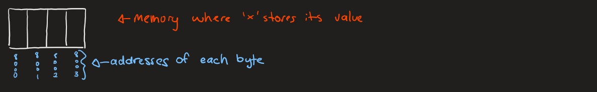

xtermBy running the command:
xterm &
You will see that a new window shoots so you can have another window to work with grace.
This is possible because of the xserver that is installed with MobaXTerm or XQuartz. An xserver allows you to have graphical interfaces through SSH.
xtermThese can by customized using flags such as:
-fa licudatypwriter to set the font to lucudatypewriter-fs 10 to set the font size to 10-fg white to set the foreground to white-bg black to set the background to blackUsing xterms can allow you to edit files and run them in different windows.
xclockThe command
xclock
Shoots a GUI of a clock. It's a crappy clock but it's still a clock. If you put an & after an xserver command such as this, you'll still be able to use the command line.
kateKate is a file editor available on Grace. It's faster than emacs and it seems to be user friendly.
Kate is local to Grace, so you know it'll work. Nelson has been playing with VS Code, but it's messy and he doesn't want us to waste time on it instead of learning C and stuff.
There are differnt types in C, each with different numbers of bytes. For example, int and long have a different number of bytes. The number of bytes can be different depending on the environment that the program is compiled and run on.
char.
char type is also sometimes called the byte type because we'll see that it gives us the ability to traverse bytes.Warning from Nelson: "Do not mix or randomly cast types unless you know what you're doing"
mixed_types_1.cThese examples come from experiences where students were spending lots of time debugging issues that pertained to misusing types:
#include <stdio.h>
int main() {
int x = 2000000000; /* value fits in x */
long result_long;
printf("Value of x: %d\n", x);
printf("Multiplying by 3 (with %%d format): %d\n", 2000000000 * 3);
printf("Multiplying by 3 (with %%ld format): %ld\n", 2000000000 * 3);
printf("Multiplying by 3L (with %%d format): %d\n", 2000000000 * 3L);
printf("Multiplying by 3L (with %%ld format): %ld\n", 2000000000 * 3L);
result_long = 2000000000 * 3; /* Does it solve the problem? */
printf("Storing result in long type variable: %ld\n", result_long);
return 0;
}
In this code, we try to take 2 billion, and multipy it by three, then print it. The problem here, is that the int in our system can accomodate 2 billion, but not 6 billion. This is because we don't have enough bytes in an int to hold the value of 2 billion.
%d, %f, etc.)?
int or double or char or float.Let's take a look at the output of this code:
grace7:~/216/lecture_examples/Week01/C-Language-III-Code: a.out
Value of x: 2000000000
Multiplying by 3 (with %d format): 1705032704
Multiplying by 3 (with %ld format): 1705032704
Multiplying by 3L (with %d format): 1705032704
Multiplying by 3L (with %ld format): 6000000000
Storing result in long type variable: 1705032704
As you can see, we only get the correct answer once. This is because the result of 2000000000 * 3L is correctly interpreted as a long. In the other tries, either the result was stored as an int, which is too small to hold the value of 6 billion, or the result was interpreted as an int even when the result was a long.
The stored result is also incorrect because the operation was done with ints, and stored in a space interpreted as a long.
mixed_types_2.cThis code empahsizes a thing called "testing":
#include <stdio.h>
int main() {
unsigned int value = 250; /* try with 250 and 4000000000 */
printf("\nType sizes\n");
printf("sizeof(unsigned int): %ld\n", sizeof(unsigned int));
printf("sizeof(int): %ld\n", sizeof(int));
printf("sizeof(long): %ld\n\n", sizeof(long));
printf("value: %u\n", value);
printf("(int)value: %d\n", (int)value);
printf("(long)value: %ld\n", (long)value);
printf("(int)value / 4: %d\n", (int)value / 4);
printf("value / 4: %d\n", value / 4);
return 0;
}
Let's also take a look at its output:
grace7:~/216/lecture_examples/Week01/C-Language-III-Code: a.out
Type sizes
sizeof(unsigned int): 4
sizeof(int): 4
sizeof(long): 8
value: 250
(int)value: 250
(long)value: 250
(int)value / 4: 62
value / 4: 62
As we can see, we can see how many bytes a type uses with the sizeof() operator.
An unsigned int is an int with no negative values.
When we cast a variable, the compiler performs the calculations necessary to transform the data stored as one type into data that can be interpreted as the new type.
double's decimals will be chopped off to become intchar will be changed into ASCII version of int for intAlthough we get the expected answers, we aren't actually performing these calculations correctly. We can see this by testing using a value of 4000000000 instead of 250. When we change the value of that variable, the output changes:
grace7:~/216/lecture_examples/Week01/C-Language-III-Code: a.out
Type sizes
sizeof(unsigned int): 4
sizeof(int): 4
sizeof(long): 8
value: 4000000000
(int)value: -294967296
(long)value: 4000000000
(int)value / 4: -73741824
value / 4: 1000000000
As we can see, we have values that are negative, even though we wouldn't expect any of these values to be negative. To understand why this is, we need to know what happens behind the scenes. The reason why it doesn't work in this case is because an int is different from an unsigned int. Since ints have negative numbers, their data is interpreted differently than unsigned ints, thereby leading to this type of error.
mixed_types_3.cTake a look at this example code:
#include <stdio.h>
#include <string.h>
static void process(const char *str) {
size_t k, value = 2;
size_t delta = strlen(str) - value; /* problem: possible negative */
int answer_is_yes; /* value assigned to delta (unsigned) */
char c;
printf("Delta value: %ld\n", delta);
printf("Enter \"yes\" to continue: ");
answer_is_yes = scanf("ye%c", &c);
if (answer_is_yes == 1) {
for (k = 0; k < delta; k++) {
printf("In loop %ld\n", k);
}
}
}
int main() {
process("house"); /* problem when using "a" */
return 0;
}
Let's also see the output of this code:
grace7:~/216/lecture_examples/Week01/C-Language-III-Code: a.out
Delta value: 3
Enter "yes" to continue: yes
In loop 0
In loop 1
In loop 2
This program checks the size of the string and then loop from 0 to 2 less than that string length. The problem here arises when the word is is less than 2 characters long. In this case, we will see an infinite loop, because the loop's iteration variable never reaches delta, which is negative.
Also, the datatype size_t is an unsigned int, so it cannot properly hold negative values.
As you can see, it's important to be careful of the types used for values that might be negative.
Here is the fixed version, mixed_types_3_fixed.c:
grace6:~/216/lecture_examples/Week01/C-Language-III-Code: cat mixed_types_3_fixed.c
#include <stdio.h>
#include <string.h>
static void process(const char *str) {
long int k, value = 2;
long int delta = (long int)strlen(str) - value;
int answer_is_yes;
char c;
printf("Delta value: %ld\n", delta);
printf("Enter \"yes\" to continue: ");
answer_is_yes = scanf("ye%c", &c);
if (answer_is_yes == 1) {
for (k = 0; k < delta; k++) {
printf("In loop %ld\n", k);
}
}
}
int main() {
process("house"); /* problem when using "a" */
return 0;
}
As we can see, the solution to this infinite loop problem is to use long int to store values that may be negative.
You can switch from one node to another node within the Grace cluster by sshing to another node within the Grace cluster. This may help if there are many people on one node.
For example
ssh grace4
will put you on the grace4 node. This can be useful when many people are on one node, which may slow it down. In this case, sshing into a node with less people can be faster.
sizeof operatorint i = 5;
sizeof() like this:
printf("%ld\n", sizeof(i));
printf("%ld\n", sizeof(unsigned char));
printf("%ld\n", sizeof(++i));
++i will NOT evaluated. Instead, we will see the size of this operation. So, the value of i will not change.printf("%d\n", i);
<TYPE><ZERO_OR_MORE_SPACES>*<ZERO_OR_MORE_SPACES><VARIABLE_NAME>;
int*ip;
int*p; /* no spaces */
int* p; /* helps emphasize p is a “variable that stores address of int */
int * p;
int *p; /* the one we prefer */ /* see man 3 scanf in linux */
To further explain the concept of pointers, let's define a variable x:
int x;
This variable x represents a value in memory. We can represent this space of memory with this drawing:

In this memory, we can see that there are four bytes next to each other that hold the value of this variable x. The addresses of these bytes, 8000, 8001, 8002, and 8003, have been chosen randomly for the purposes of this example but they're still next to each other and have incremental memory addresses.
/////////////////////////////////// here ///////////////////////////////////////
reading.cTake a look at this code that shows the usage of pointers
#include <stdio.h>
int main() {
int age, values_read;
int* age_ptr = &age;
float salary;
printf("Enter your age and salary (using <age>-<salary> format): ");
/* This example shows we don't always use & in variables of a scanf */
values_read = scanf("%d-%f", age_ptr, &salary);
if (values_read != 2) {
printf("Invalid data provided\n");
} else {
printf("Provided values Age: %d, Salary: $%.2f\n", age, salary);
}
return 0;
}